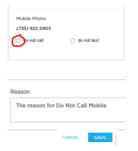

UOWN LEASING
When to Follow the DNC Procedure
When a CUSTOMER or THIRD PARTY mentions "Stop Calling," the agent must follow the DNC (Do Not Call) Procedure.
- Third Party said that we called the wrong number
- Customer or Third Party said "You are calling me multiple times a day. This is harassment."
- Customer said to cease all communication efforts.
NOTE: Make sure that we are ACTIVELY LISTENING for DNC Statements and follow the procedure. This is to avoid any Autofail and/or possible cases filed against UOwn.
How to Mark a Number as DNC
Select the DO NOT CALL and DO NOT TEXT option in the Servicing System.
Put the reason why we are adding the number on the DNC list, then click SAVE.
Manual Update
Manually change the customer’s phone number to (999) 999-9999.
After following the DNC Procedure, make sure to add the phone number and associated account number in our DNC Tracker.
Click HERE to route to the tracker.